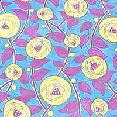

The Baltimore Museum of Modern Textiles features a permanent collection of more than 15,000 pieces that celebrates cultural diversity and includes fabrics, garments, and related artifacts such as beadwork and tapestry. Along with exhibit rooms the museum also contains a conservation workshop, textile storehouse, education center, and library.
The permanent collection features pieces from many countries around the world from any time between 1800-present.
Featuring printed textiles (patterns) in Art Nouveau and early Art Deco styles.
Textile Length
Designer Unknown
Date: ca 1920
Medium: Block-printed linen
Le Feu
Yvonne Clarinval
Date: 1923
Silk lampas
Textile Sample
La Maison Martine (Paul Poiret)
Date: ca 1911-23
Silk satin
The Tibetan Goat
Raoul Dufy
Date: 1920
Silk, Wool